n个结点构造多少种树
本节要讨论的是当给定 n（n>=0）个结点时，可以构建多少种形态不同的树。
每一棵普通树对应的都是一棵没有右子树的二叉树，所以对于 n 个结点的树来说，树的形态改变是因为除了根结点之外的其它结点改变形态得到的，所以，n 个结点构建的形态不同的树与之对应的是 n-1 个结点构建的形态不同的二叉树。
如果 tn 表示 n 个结点构建的形态不同的树的数量，bn 表示 n 个结点构建的形态不同的二叉树的数量，则两者之间有这样的关系：
【方法一】
最直接的一种方法就是推理。当 n=0 时，只能构建一棵空树；当 n=2 时，可以构建 2 棵形态不同的二叉树，如图 1（A）；当 n=3 时，可以构建 5 棵形态互不相同的二叉树，如图 1（B）。
对于具有 n（ n>1 ）个结点的二叉树来说，都可以看成是一个根结点、由 i 个结点组成的左子树和由
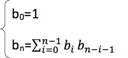
通过对公式一步步的数学推算，最后得出，含有 n 个结点的不相似的二叉树的数量为：
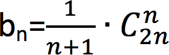
【方法二】
从遍历二叉树的角度进行分析，对于任意一棵二叉树来说，它的前序序列和中序序列以及后序序列都是唯一的。其实是这句话还可以倒过来说，只要确定了一棵二叉树的三种遍历序列中的两种，那么这棵二叉树也可以唯一确定。
例如，给定了一个二叉树的前序序列和中序序列分别为：
分析：通过前序序列得知，结点A为二叉树的根结点，结合中序序列，在结点 A 左侧的肯定为其左孩子中的所有结点，右边为右孩子的所有结点，如图 2（1）所示。
再分析 A 结点的左孩子，在前序序列看到，结点 A 后紧跟的是结点 B，由此断定结点 A 的左孩子是 B，再看中序序列，结点 B 左侧只有一个结点 C ，为 B 的左孩子，结点 B 右侧的结点E 和 D 为右孩子，如图 2（2）。
再分析结点 B 的右孩子，前序序列看到，结点 D 在 E 的前边，所有 D 为 B 的右孩子。在中序序列中，结点 E 在 D 前边，说明 E 是 D 的左孩子，如图 2（3）。
最后分析结点 A 的右孩子，由前序序列看到， F 在 G 前边，说明F为根结点。在中序序列中也是如此，说明，G 是 F 的右孩子。如图 2（4）所示。
如果要唯一确定一棵二叉树，必须知道至少两种遍历序列。如果只确定一种序列，无法准确判定二叉树的具体构造。
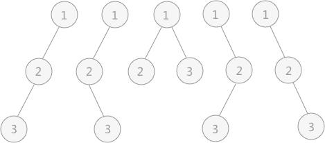
图 3 前序序列（1，2，3）的二叉树
如图 3 所示为前序序列（1，2，3）构建的不同形态的二叉树，他们的中序序列各不相同。所以不同形态二叉树的数目恰好就是前序序列一定的情况下，所能得到的不同的中序序列的个数。
中序序列是对二叉树进行中序遍历获得的，遍历的过程实质上就是结点数据进栈出栈的过程。所以，中序序列的个数就是数列（1，2，3）按1-2-3的顺序进栈，各元素选择在不同的时间点出栈，所获的的不同的出栈顺序即为中序序列，而中序序列的数目，也就是不同形态的二叉树的个数。
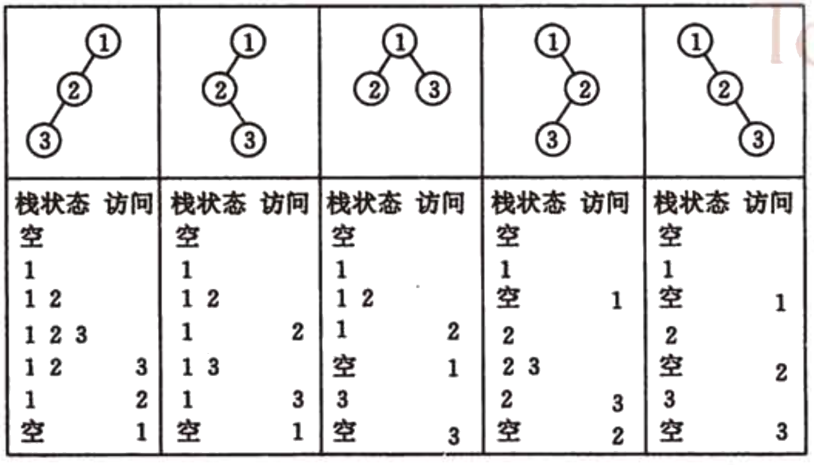
图 4 中序遍历时进栈和出栈的过程
根据数列中数据的个数 n，所得到的排列顺序的数目为：
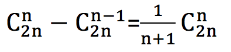
通过以上两种方式，都可以知道 n 个结点能构建的不同形态的二叉树的数量，再结合 tn=bn-1，就可以计算出 n 个结点能构建的不同形态的树的个数。
前面介绍过，对于任意一棵普通树，通过孩子兄弟表示法的转化，都可以找到唯一的一棵二叉树与之对应。所以本节研究的题目也可以转化成：n 个结点可以构建多少种形态不同的二叉树。如果两棵树中各个结点的位置都一一对应，可以说这两棵树相似。如果两棵树不仅相似，而且对应结点上的数据也相同，就可以说这两棵树等价。本节中，形态不同的树指的是互不相似的树。
每一棵普通树对应的都是一棵没有右子树的二叉树，所以对于 n 个结点的树来说，树的形态改变是因为除了根结点之外的其它结点改变形态得到的，所以，n 个结点构建的形态不同的树与之对应的是 n-1 个结点构建的形态不同的二叉树。
如果 tn 表示 n 个结点构建的形态不同的树的数量，bn 表示 n 个结点构建的形态不同的二叉树的数量，则两者之间有这样的关系：
tn=bn-1。【方法一】
最直接的一种方法就是推理。当 n=0 时，只能构建一棵空树；当 n=2 时，可以构建 2 棵形态不同的二叉树，如图 1（A）；当 n=3 时，可以构建 5 棵形态互不相同的二叉树，如图 1（B）。
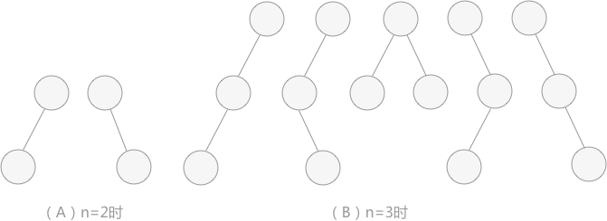
图 1 不同形态的二叉树
图 1 不同形态的二叉树
对于具有 n（ n>1 ）个结点的二叉树来说，都可以看成是一个根结点、由 i 个结点组成的左子树和由
n-i-1 个结点组成的右子树。
可以得出一个递推公式：当 n=1 时，也适用，只不过只有一个根结点，没有左右孩子（i=0）。
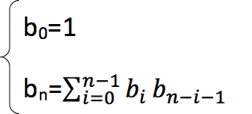
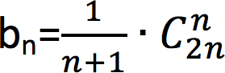
【方法二】
例如，给定了一个二叉树的前序序列和中序序列分别为：
前序序列：A B C D E F G
中序序列：C B E D A F G
可以唯一得到的二叉树如图 2（4）：
中序序列：C B E D A F G
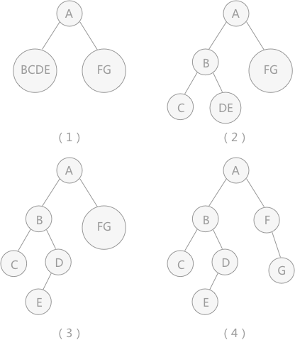
图 2 构造二叉树的过程示意图
图 2 构造二叉树的过程示意图
分析：通过前序序列得知，结点A为二叉树的根结点，结合中序序列，在结点 A 左侧的肯定为其左孩子中的所有结点，右边为右孩子的所有结点，如图 2（1）所示。
再分析 A 结点的左孩子，在前序序列看到，结点 A 后紧跟的是结点 B，由此断定结点 A 的左孩子是 B，再看中序序列，结点 B 左侧只有一个结点 C ，为 B 的左孩子，结点 B 右侧的结点E 和 D 为右孩子，如图 2（2）。
再分析结点 B 的右孩子，前序序列看到，结点 D 在 E 的前边，所有 D 为 B 的右孩子。在中序序列中，结点 E 在 D 前边，说明 E 是 D 的左孩子，如图 2（3）。
最后分析结点 A 的右孩子，由前序序列看到， F 在 G 前边，说明F为根结点。在中序序列中也是如此，说明，G 是 F 的右孩子。如图 2（4）所示。
如果要唯一确定一棵二叉树，必须知道至少两种遍历序列。如果只确定一种序列，无法准确判定二叉树的具体构造。
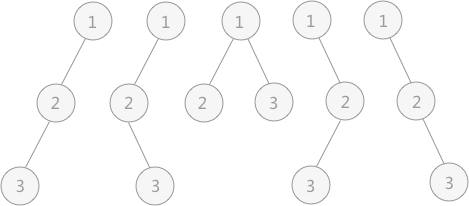
图 3 前序序列（1，2，3）的二叉树
如图 3 所示为前序序列（1，2，3）构建的不同形态的二叉树，他们的中序序列各不相同。所以不同形态二叉树的数目恰好就是前序序列一定的情况下，所能得到的不同的中序序列的个数。
中序序列是对二叉树进行中序遍历获得的，遍历的过程实质上就是结点数据进栈出栈的过程。所以，中序序列的个数就是数列（1，2，3）按1-2-3的顺序进栈，各元素选择在不同的时间点出栈，所获的的不同的出栈顺序即为中序序列，而中序序列的数目，也就是不同形态的二叉树的个数。
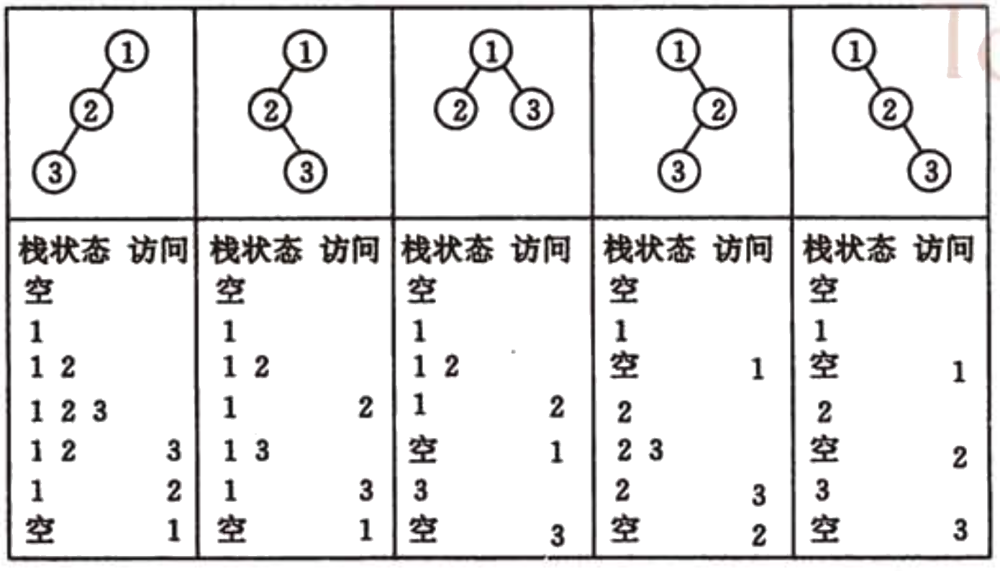
图 4 中序遍历时进栈和出栈的过程
根据数列中数据的个数 n，所得到的排列顺序的数目为：
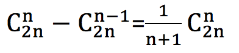
关注公众号「站长严长生」，在手机上阅读所有教程，随时随地都能学习。内含一款搜索神器，免费下载全网书籍和视频。

微信扫码关注公众号